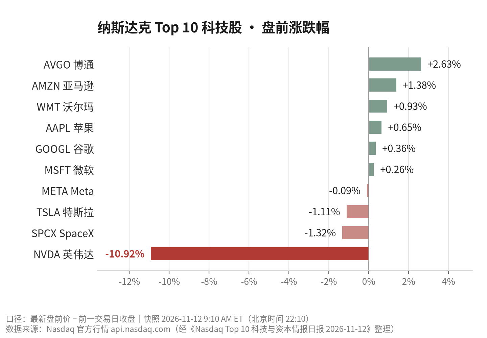

2026-11-12 周四｜美东盘前｜数据快照 北京时间 22:10
今天盘前，纳斯达克市值前十的科技公司里，有九家的涨跌幅都在 ±3% 以内。
只有一家，把跌幅砸到了两位数。
英伟达 −10.92%
盘前 154.76 美元，前收 173.73 美元，单股跌掉 18.97 美元
而这条跌幅对应的消息，在自家情报报告里的置信度评级是 0.3——最低的一档。
这就是今天最值得说的事：价格在交易的，不是已经发生的事实，而是一条还没被任何人证实的传闻。
先把事实和判断分开。事实的部分可以核，判断的部分我会把前提摊开写。
01
今天只有三条 A 级情报
报告当天归并了 52 个事件，够得上 A 级（4/5）的只有三条。三条的共同点是：都只有一个信源，都还没有官方文件确认。
第一条，Anthropic 的 IPO 认购。据 The Motley Fool 经 Nasdaq 转载的报道，英伟达与 Alphabet 同意各以 IPO 价格认购 100 亿美元的 Anthropic 股票；按发行价区间中值 74 美元算，英伟达那 100 亿美元约合 1.35 亿股。置信度 0.5。
值得注意的是报道没说的部分：这 100 亿美元是已支出、已签约，还是只是预算？交易是私募配售还是二级买入？锁定期怎么安排？一个字都没有。Alphabet 和 Anthropic 也都没发公告。
第二条，特斯拉的产线腾挪。Zacks 的报道称，特斯拉计划在 2027 年秋季前逐步停产 Cybertruck，把产能让给 Cybercab 自动驾驶出租车。置信度 0.5。
同样，没有官方公告，没有财报电话会的原话，没有产量、交付量、减值计提的任何数字。这条更准确的表述是：一条关于产能规划的媒体报道，而不是一项已批准的公司决策。
第三条，就是今天砸盘的那条。Nasdaq 转载 The Motley Fool 的报道，标题大意是：英伟达董事会可能最快当晚投票，罢免 CEO 黄仁勋。
报道摘要原文口径：有消息指，Nvidia 董事会可能最快在当晚投票罢免 CEO 黄仁勋。
—— 来源：Nasdaq News / The Motley Fool，2026-11-11。报告中该事件被标注为「未经证实的传闻」，置信度 0.3，无具名信源。
到这里，事实部分结束。三条都是单信源、都待核验，无法作为决策依据。
02
盘面：十家公司，一个 outlier
把十家公司摊开看，分化非常干净。博通 +2.63%、亚马逊 +1.38%、沃尔玛 +0.93%，其余小涨小跌；特斯拉 −1.11%、SpaceX −1.32%，属于正常波动区间。

图 1｜口径为盘前最新价减前一交易日收盘，非收盘涨跌。数据来源：api.nasdaq.com，经 2026-11-12 情报日报整理
这张图里只有一个缺口。−10.92% 不是板块性的下跌，它是单一标的的事件性重定价。同一时点，AI 算力链条上的博通还在涨 2.63%。
| 公司 | 代码 | 盘前价 | 涨跌 |
|---|---|---|---|
| 博通 | AVGO | 354.29 | +2.63% |
| 亚马逊 | AMZN | 269.85 | +1.38% |
| 沃尔玛 | WMT | 126.84 | +0.93% |
| 苹果 | AAPL | 357.95 | +0.65% |
| 谷歌 | GOOGL | 294.50 | +0.36% |
| 微软 | MSFT | 522.50 | +0.26% |
| Meta | META | 628.22 | −0.09% |
| 特斯拉 | TSLA | 386.49 | −1.11% |
| SpaceX | SPCX | 137.90 | −1.32% |
| 英伟达 | NVDA | 154.76 | −10.92% |
表 1｜盘前快照，2026-11-12 9:10 AM ET。前收为 11 月 11 日收盘价，当日尚未收盘
03
判断：这 10.9% 在给什么定价
以下是我的判断，不是报告结论。
如果市场真的相信「CEO 当晚被罢免」这件事已经成立，跌幅不会是 10.9%，也不会只是一家公司动。真正在发生的，是不确定性被提前折价：一条没有署名信源、没有官方回应的传闻，足以让持仓者在盘前先卖出一部分，把风险敞口压下来。
换句话说，价格买的不是事件，是「万一」。
这个判断成立的前提有三条，任何一条被打破，我就得改口。
一、传闻本身在官方层面保持沉默。只要英伟达发出一句否认或澄清，10.9% 里属于「情绪」的那部分就会快速回补。
二、没有第二家独立媒体跟进。目前这条消息仍只有单一来源，去重后归并事件里也只算一条，置信度 0.3。
三、AI 资本开支这条主线不出新问题。今天博通还在涨、亚马逊也在涨，说明市场并未把这件事当成行业性利空。
反过来也要说清：如果真有一份 8-K 或董事会声明落地，那这 10.9% 就不是错杀，而只是第一段。治理层面的变动从来不只影响一天的价格，它影响的是未来两年资本配置的路径。
04
三条被传闻盖住的线
抛开英伟达今天的噪音，报告里还有三条结构性信息，分量不轻。
一是 AI 资本在向头部模型公司集中。英伟达和 Alphabet 各出 100 亿美元认购 Anthropic，如果属实，这是「芯片商 + 云厂商」同时押注同一家模型公司的罕见组合。这笔钱一旦确认，Anthropic 的 IPO 定价逻辑就要重算。
二是模型公司开始往办公软件里走。Anthropic 推出自己的表格类产品，直接踩到微软的地盘。软件层的竞争，从「谁的模型强」变成了「谁占了工作流」。
三是资本开支正在挤压现金流。亚马逊 2200 亿美元量级的 AI 资本开支、Alphabet 自由现金流转负、苹果创纪录季度却因内存成本下跌——三件事拼起来是同一个方向：收入还在涨，但钱越来越紧。这是比任何一条传闻都更长久的变量。
另外，博通前五大客户占最近季度营收约 55%。客户集中度到这个位置，任何一家大客户的资本开支节奏变化，都会被放大成业绩波动。
05
接下来盯什么
不用盯盘前涨跌，盯这四件事的落地。每一条都能在公开渠道查到，查不到就当它没发生。
1. 英伟达是否就董事会投票或管理层变动作出官方声明，或向 SEC 提交 8-K。
2. Alphabet、Anthropic 的官方公告或 IPO 招股书，是否确认各 100 亿美元认购、交易结构与锁定期。
3. 特斯拉官方或财报电话会，是否确认 Cybertruck 停产时间表与 Cybercab 产能安排，以及相关资本开支和减值口径。
4. 下一轮财报中，Alphabet 的自由现金流与亚马逊的资本开支指引是否继续恶化。
今天就这些。三条 A 级情报全是单信源，没有一条够格当结论用。真正该做的，是等官方文件，而不是追盘前的分时线。
数据来源：《Nasdaq Top 10 科技与资本情报日报》2026-11-12（报告日期 2026-11-12，快照 2026-11-12 14:10 UTC）；市值与行情来自 Nasdaq 官方筛选器及 api.nasdaq.com；新闻来自 Nasdaq News / PR Newswire、The Motley Fool、Zacks；公告来自 SEC EDGAR。报告归并事件 52 条，其中 51 条为待核验事件（单一来源或缺少正文）。
口径说明：文中价格均为盘前快照，与当日收盘价不同；带符号的涨跌幅为「盘前最新价 − 前一交易日收盘」，不代表收盘表现。
本文仅为公开信息整理与分析，不构成任何投资建议。文中涉及的公司事件均标注了证据等级与信源数量，未经官方确认的部分请自行核验。